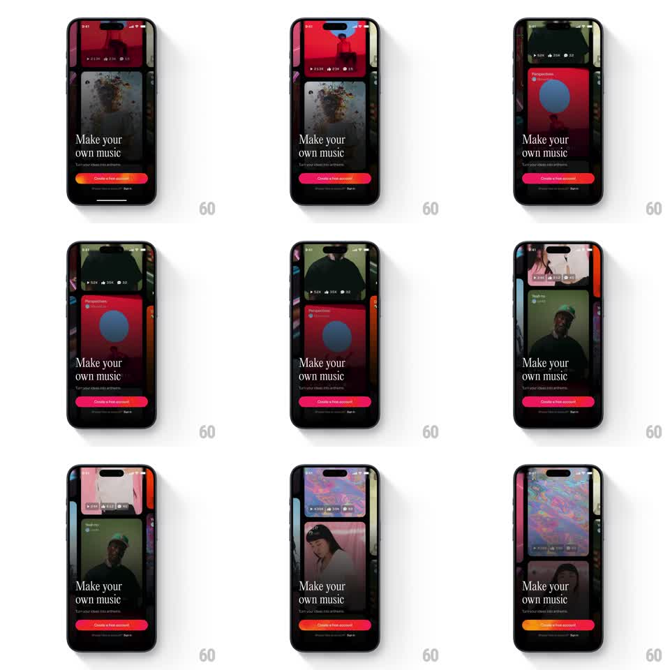

Media
Frame-by-frame

Rebuild this animation 1:1: Suno's intro - after an orange-red gradient "SUNO" splash, the onboarding screen reveals an ambient multi-column feed of music cards scrolling vertically at staggered speeds behind the "Make your own music" headline and red "Create a free account" button.

Rebuild this animation 1:1: Suno's intro - after an orange-red gradient "SUNO" splash, the onboarding screen reveals an ambient multi-column feed of music cards scrolling vertically at staggered speeds behind the "Make your own music" headline and red "Create a free account" button. ## Integration Integration: stack-agnostic spec - springs given as stiffness/damping, timed motions as duration + curve; map every value to your framework and animation library of choice. ## Scene Splash: full-screen orange-red gradient with white "SUNO" wordmark. Main: a 3-column vertical feed of music video cards (album art, titles like "Perspectives" / "Maths", view and like counts) filling the screen edge-to-edge, a dark scrim gradient at the bottom, white headline "Make your own music", subline "Turn your ideas into anthems", red gradient "Create a free account" button, and a "Sign in" link. ## Motion spec Pattern: ambient parallax card feed, continuous. - Splash: the gradient holds 1.2s, then the feed rises in behind it (500ms, ease-out) as the wordmark fades (250ms). - Scroll: each column loops upward continuously at a different speed (center ~24px/s, sides ~14px/s), wrapping seamlessly. - Foreground: headline and button fade + rise in (400ms, ease-out, 100ms stagger) after the feed starts. - Cards: fully opaque, no individual animation - motion comes only from the columns. ## Calibration - Column speeds differ but never stop or reverse; seams must be invisible. - The scrim keeps the button readable over any card combination. ## Reduced motion Feed is static; splash crossfades to the main screen (300ms). ## Don't miss - The offset column speeds are the texture - synced columns kill the effect. - The feed passes behind the headline; text and button float above it.